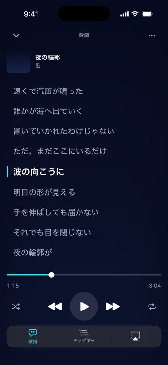
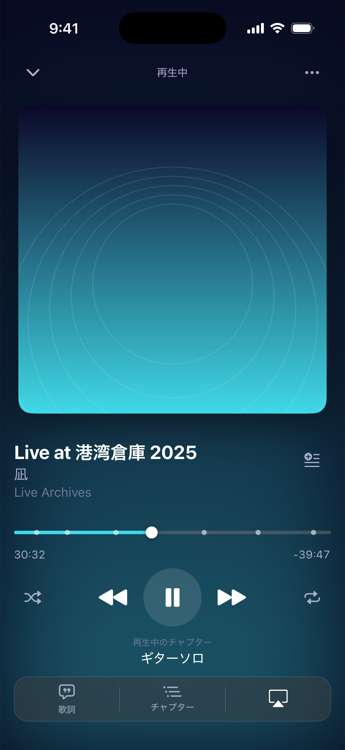
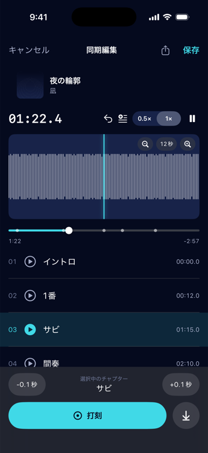
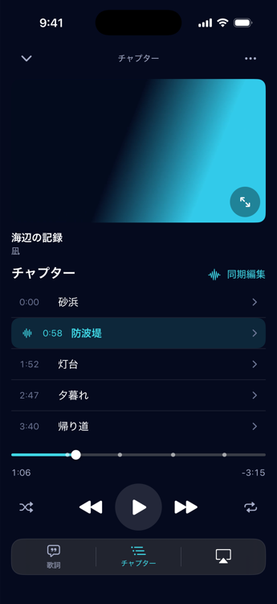
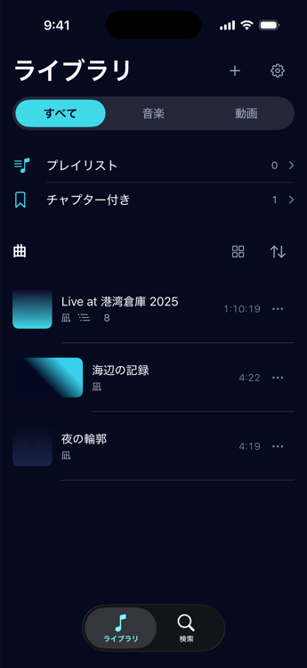

歌詞
再生に合わせて歌詞が進み、行をタップするとそこから再生します。テキストの貼り付けや .lrc の読み込みにも対応。
音源と動画に、チャプターを。
ライブのソロも、お気に入りの一曲も。
手元の音源と動画にチャプターをつけて、
聴きたい場所から、もう一度。
iPhone・iPad向け

一度つけたチャプターが、次に聴くときの目印になります。
操作イメージ音声は再生されません
30:24 ギターソロ
手元の音源や動画を読み込みます。
再生しながら、その位置にチャプターを追加します。
次からは、チャプターをタップしてそこから再生。
打った位置は、波形を見ながら 0.1 秒ずつ微調整できます。


再生に合わせて歌詞が進み、行をタップするとそこから再生します。テキストの貼り付けや .lrc の読み込みにも対応。

講義や自分で撮った動画にも、同じようにチャプターを。

プレイリストや並べ替えで整理。チャプター付きの音源は、まとめて見つけられます。
ほかに気になることは、お問い合わせからどうぞ。